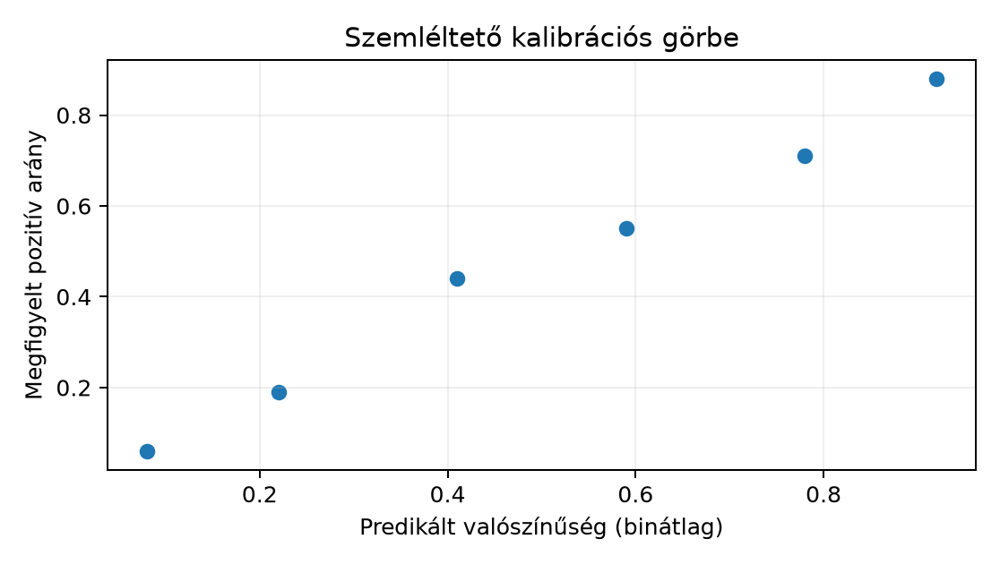

A Globális és lokális magyarázat alfejezetben
megnéztük, mit miért mond a modell; most azt kérdezzük, mennyire
hihetünk a kimenet konkrét számértékének. A Northstar prediktív
projektben a célváltozó target_late: 1, ha
delivery_days > promised_days (7 nap), egyébként 0. A
modell egy HistGradientBoostingClassifier, és a
predict_proba például 0,73-et ad egy új rendelésre. Kérdés:
ha sok olyan rendelést nézünk, amelyre a modell 0,73 körüli értéket
mond, valóban 73% körüli lesz a késői kézbesítések aránya? Ez a
kalibráció (calibration) kérdése.
A kérdés mögött két különböző bizonytalanság van. Az
eseménybizonytalanság (aleatoric uncertainty) magából a
megfigyelési folyamatból fakad: egy adott rendelés kimenete akkor is
véletlen, ha a valódi valószínűség pontosan ismert; a
target_late Bernoulli-eloszlású Véletlen változó és gyakori eloszlásmodellek
szerint. A modellhiba (epistemic uncertainty) viszont
onnan ered, hogy a valódi valószínűséget nem ismerjük pontosan; csak a
tanítóadaton becsült modellünk van. Több vagy jobb tanítóadat ezt
csökkentheti, míg az eseménybizonytalanság nem szüntethető meg.
A következő feladat előzetes becslésként segít a gondolkodás elindításában: egy modell a teszthalmaz 100 olyan pontjára, ahol a predikált valószínűség 0,70 és 0,80 közé esik, átlagosan 0,74-et ad. Körülbelül hány pozitív esetet várunk, ha a modell kalibrált? Ha nem az elvárt számot kapjuk, milyen irányú torzításról beszélünk? (A megoldást a feladatok után adjuk meg.)
A kalibráció formális definíciója: egy modell jól kalibrált, ha minden predikált valószínűség-értékre a tényleges feltételes valószínűség közelítőleg megegyezik a predikcióval:
ahol a megfigyelt kimenet, a modell által adott valószínűség. Mivel folytonos mellett egy-egy konkrét értékhez alig tartozna megfigyelés, a gyakorlatban bineket képezünk. A megbízhatósági görbe (reliability diagram) minden binre két átlagot ábrázol:
ahol a -edik binbe eső tesztelemek száma, a predikció, a megfigyelt 0/1 kimenet. Tökéletes kalibrációnál a pontok a 45°-os egyenesen fekszenek. Ha egy pont az egyenes alatt van, a modell abban a tartományban felülbecsli a valószínűséget; ha felette, alulbecsli.
A kalibráció egy skalár mutatója a Brier-pontszám (Brier score):
ahol a tesztpontok száma, a predikált valószínűség, a megfigyelt kimenet. A Brier-pontszám 0 és 1 közötti, minél kisebb, annál jobb. Két hasznos invariáns: a konstans 0,5-ös modell Brier-pontszáma mindig 0,25, mert minden -re; ha a tesztmintában a pozitívok aránya , akkor a konstans predikció Brier-pontszáma , ami legfeljebb 0,25. A Brier-pontszám egyszerre jutalmazza a jó kalibrációt és a jó diszkriminációt, ezért két különböző hibát is összemoshat; ezért mindig a görbét is meg kell nézni.
A következő kód a lab data/orders.csv és
data/customers.csv fájljait használja, és a Fák, random forest és gradiensboosting alfejezetben
bemutatott boosting modellt tanítja az időbeli split szerint. A scriptet
a lab könyvtárból futtatjuk, miután a környezetet
uv sync paranccsal telepítettük. A kód nem futtatott mérési
jegyzék; a kimenet szemléltető, a pontos számok a helyi futtatástól
függnek.
# s102_calibration.py — futtatandó: cd lab && uv run python s102_calibration.py
from pathlib import Path
import pandas as pd
import numpy as np
from sklearn.ensemble import HistGradientBoostingClassifier
from sklearn.compose import ColumnTransformer
from sklearn.pipeline import Pipeline
from sklearn.preprocessing import OneHotEncoder
from sklearn.calibration import calibration_curve
from sklearn.metrics import brier_score_loss
orders = pd.read_csv(Path("data") / "orders.csv")
customers = pd.read_csv(Path("data") / "customers.csv")
orders["order_ts"] = pd.to_datetime(orders["order_ts"], utc=True)
orders["label_available_at"] = pd.to_datetime(orders["label_available_at"], utc=True)
customers["signup_date"] = pd.to_datetime(customers["signup_date"], utc=True)
df = orders.merge(
customers[["customer_id", "signup_date", "segment", "region", "acquisition_channel"]],
on="customer_id", how="left"
)
df["account_age_days"] = (
df["order_ts"] - df["signup_date"]
).dt.days
cutoff = pd.Timestamp("2025-05-01T00:00:00+00:00")
train_mask = (df["order_ts"] < cutoff) & (df["label_available_at"] < cutoff)
test_mask = df["order_ts"] >= cutoff
features = [
"distance_km", "priority_flag", "basket_minor", "quantity_sum",
"account_age_days", "segment", "region", "acquisition_channel"
]
X_train = df.loc[train_mask, features]
y_train = df.loc[train_mask, "target_late"]
X_test = df.loc[test_mask, features]
y_test = df.loc[test_mask, "target_late"]
numeric_features = [
"distance_km", "priority_flag", "basket_minor", "quantity_sum", "account_age_days"
]
categorical_features = ["segment", "region", "acquisition_channel"]
preprocess = ColumnTransformer([
("num", "passthrough", numeric_features),
("cat", OneHotEncoder(handle_unknown="ignore", sparse_output=False), categorical_features),
])
model = Pipeline([
("preprocess", preprocess),
("classifier", HistGradientBoostingClassifier(
max_iter=200, learning_rate=0.08, early_stopping=False, random_state=42
)),
])
model.fit(X_train, y_train)
y_prob = model.predict_proba(X_test)[:, 1]
prob_true, prob_pred = calibration_curve(
y_test, y_prob, n_bins=10, strategy="quantile"
)
brier = brier_score_loss(y_test, y_prob)
print("Brier a teljes teszten:", round(brier, 4))
print("Kalibrációs pontok (predikált, megfigyelt):")
for px, py in zip(prob_pred, prob_true):
print(f" {px:.3f} {py:.3f}")
# Külön időablakok: 2025. május és 2025. június
for start, end, name in [
("2025-05-01", "2025-06-01", "majus"),
("2025-06-01", "2025-07-01", "junius"),
]:
mask = (df.loc[test_mask, "order_ts"] >= pd.Timestamp(start, tz="UTC")) & (
df.loc[test_mask, "order_ts"] < pd.Timestamp(end, tz="UTC")
)
y_t = y_test[mask]
y_p = y_prob[mask]
if len(y_t) == 0:
print(f"{name}: nincs tesztmegfigyelés ebben az időablakban")
continue
b = brier_score_loss(y_t, y_p)
print(f"{name}: tesztpont {len(y_t)}, Brier {b:.4f}")A szemléltető kimenetben a teljes teszt Brier-pontszáma 0,18 körül lehet, ami jobb a 0,25-ös állandó modellnél; a kalibrációs pontok a 45°-os vonal közelében, de nem pontosan rajta helyezkednek el. A két időablak Brier-pontszáma eltérhet, mert a májusi és júniusi forgalom eloszlása nem azonos. A kalibrációs pontpárok egy lehetséges szemléltető alakja:

A calibration_curve két, azonos hosszúságú tömböt ad
vissza: prob_pred a nem üres binek átlagos
predikciója, prob_true a bennük mért pozitív arány.
n_bins=10 esetén is legfeljebb tíz pont
jelenik meg, mert az üres binek kimaradnak. Az értékeléshez érdemes a
binenkénti elemszámokat külön is meghatározni. Az ellenőrzés során
érdemes együtt vizsgálni a binméretet is: ha egy binbe csak néhány pont
esik, a mért arány nagy véletlen ingadozást mutathat. A bin
gyakoriságának
becsült standard hibája közelítőleg
,
tehát
és
mellett körülbelül 0,084.
A kalibráció az eseménybizonytalanság átlagos egyezését méri; nem mutatja meg, mennyire stabil maga a modell. A bootstrap modellcsoport (bootstrap models) a modellhiba becslésére használ egyszerű újramintavételezést: a tanító indexekből darab, visszatevéssel vett mintát képezünk, mindegyiken újratanítjuk a modellt, majd egy rögzített tesztpontra megnézzük a predikciók eloszlását. A szórás a modellhiba közelítő mértéke; ha a tanítóhalmaz kicsi vagy a modell instabil, a szórás nagy.
from sklearn.utils import resample
def bootstrap_preds(model_cls, X_train, y_train, X_point, B=50, seed=42):
preds = []
n = len(X_train)
rng = np.random.default_rng(seed)
for b in range(B):
idx = rng.integers(0, n, size=n) # bootstrap soronként
if y_train.iloc[idx].nunique() < 2:
continue # egyszínű bootstrap-minta nem tanítható kétosztályos modellként
m = model_cls(random_state=b)
m.fit(X_train.iloc[idx], y_train.iloc[idx])
preds.append(m.predict_proba(X_point)[0, 1])
return np.array(preds)
# Példa egy rögzített tesztpontra:
point = X_test.iloc[[0]]
bp = bootstrap_preds(lambda random_state: Pipeline([
("preprocess", ColumnTransformer([
("num", "passthrough", numeric_features),
("cat", OneHotEncoder(handle_unknown="ignore", sparse_output=False), categorical_features),
])),
("classifier", HistGradientBoostingClassifier(random_state=random_state)),
]), X_train, y_train, point, B=50)
print(f"predikció átlag: {bp.mean():.3f}, szórás: {bp.std():.3f}")A szemléltető szórás 0,01–0,05 között lehet; a konkrét érték a seedtől és a modellparaméterektől függ. Fontos korlát: a Northstar adatban egy ügyfélnek több rendelése is van, ezért a soronkénti bootstrap mintavétel nem kezeli az ügyfélszintű függést. A mintavételi egység itt a rendelés, nem az ügyfél; ha ügyfélszintű bizonytalanságot akarunk, az ügyfél-azonosítók újramintavételezése lenne a helyes út.
A konform predikció (conformal prediction)
közvetlenül az új megfigyelésre ad predikciós
intervallumot (prediction interval), nem a modell paraméterére.
Az alábbi split-conformal változat két diszjunkt
halmazt használ: egy tanítóhalmazt a modell illesztésére és egy
kalibrációs halmazt a hibák kalibrálására. A cél egy regressziós
kimenet, például delivery_days; a Northstar fő céljában ez
nem predictor, de itt egy külön, szintetikus illusztrációban
természetes.
A módszer lépései:
A felhasznált kvantilis itt nem a hibaeloszlás elméleti paramétere, hanem a kalibrációs halmaz empirikus rendezett statisztikája. A garantált lefedettség marginális:
feltéve, hogy a kalibrációs és az új pontok kicserélhetők (exchangeable). A kicserélhetőség azt jelenti, hogy a pontok együttes eloszlása nem változik, ha sorrendjüket tetszőlegesen átrendezzük. Független, azonos eloszlású (i.i.d.) pontok kicserélhetők; időbeli adatnál azonban a múltbeli kalibrációs pontok és a jövőbeli tesztpontok általában nem, mert a folyamat eltolódhat. A Northstar időbeli splitje ezért nem teljesíti automatikusan a konform garanciát; ez a módszer inkább akkor használható, ha a kalibrációs és az új pontok ugyanabból a stacionárius folyamatból származnak.
A következő szintetikus kód i.i.d. adaton mutatja a split-conformal eljárást:
rng = np.random.default_rng(42)
X = rng.uniform(0, 1, size=(400, 1))
y = 3.0 * X[:, 0] + rng.normal(0, 0.5, size=400)
X_fit, X_cal, X_test = X[:150], X[150:300], X[300:]
y_fit, y_cal, y_test = y[:150], y[150:300], y[300:]
# A modellillesztés és a konform kalibráció adatai diszjunktak.
fit = LinearRegression().fit(X_fit, y_fit)
cal_scores = np.abs(y_cal - fit.predict(X_cal))
alpha = 0.1
n_cal = len(cal_scores)
q = np.sort(cal_scores)[int(np.ceil((n_cal + 1) * (1 - alpha))) - 1]
test_scores = np.abs(y_test - fit.predict(X_test))
coverage = np.mean(test_scores <= q)
print(f"q = {q:.3f}, empirikus lefedettség = {coverage:.3f}")Itt , , tehát ; a kvantilis a 136. legkisebb kalibrációs abszolút hiba. A tesztmintán mért lefedettség véletlenszerűen ingadozhat; a legalább 90%-os marginális garancia az új, kicserélhető megfigyelésre vonatkozó ismételt mintavételi állítás, nem egy adott tesztmintára vagy alcsoportra előírt alsó korlát. Az intervallum jelentése: az új pontok 90%-át várhatóan lefedi, de ez nem jelenti, hogy egy adott csoportban is 90%.
Értelmezés. Egy kalibrációs binben 80 tesztpont van, a predikciók átlaga 0,55, a megfigyelt pozitívok aránya 0,42. Kalibrált-e a modell ebben a tartományban? Milyen irányú torzítást mutat?
Megvalósítás. Adott
y_true = np.array([0, 1, 0, 1, 1]) és
y_prob = np.array([0.2, 0.6, 0.1, 0.8, 0.7]). Számítsa ki a
Brier-pontszámot kézzel (NumPy nélkül is lehet), és ellenőrizze a
sklearn.metrics.brier_score_loss kimenetével. Mi a
minimális és maximális lehetséges érték erre az öt pontra?
Hibakeresés. Egy tanuló a következő sort
használja: y_prob = model.predict(X_test), majd ezt adja a
calibration_curve-nak. A függvény fut, de a görbe két
szélső pontba koncentrálódik. Mi a hiba, és hogyan javítandó?
Transzfer megváltozott feltételre. A modell a
teljes júniusi tesztablakon jól kalibráltnak tűnik, de a
segment == "business" szegmensben a megfigyelt pozitív
arány minden binben alacsonyabb a predikált átlagnál. Milyen további
vizsgálatot végezne, és milyen műveletet fontolna meg? Indokolja a
csoportos kalibráció szükségességét.
Konform ellenőrzés. A split-conformal példában és . Hányadik legkisebb kalibrációs pontszámot kell kvantilisként használni? Ha a rendezett pontszámok 160. eleme 0,47 és 161. eleme 0,51, akkor a kvantilis 0,51; miért nem a kerekítés másik iránya?
A modell felülbecsli a valószínűséget ebben a tartományban: a predikciók átlaga 0,55, a tényleges gyakoriság 0,42. A pont a 45°-os vonal alatt helyezkedne el. A standard hiba , tehát a 0,13-as eltérés valószínűleg nem pusztán binméret-ingadozás.
A Brier-pontszám:
A
brier_score_loss(y_true, y_prob) ugyanezt adja. Az öt
ponton a minimális 0, ha minden predikció pontosan egyezik a kimenettel;
a maximális 1, ha minden predikció a rossz osztályt kapja 1
valószínűséggel.
A predict osztálycímkét ad vissza (0 vagy 1), a
kalibrációhoz a pozitív osztály valószínűsége kell. A helyes sor:
y_prob = model.predict_proba(X_test)[:, 1]Ekkor a calibration_curve bemenete a
intervallumba eső valószínűség, és a binekben értelmes átlagok
képződnek.
A csoportszintű eltérés szisztematikus torzítás jele: a business szegmensben a modell folyamatosan túl magas valószínűséget ad. Ilyenkor külön kalibrációs görbét kell számítani a szegmensre; ha az eltérés stabil, egy kalibrációs réteg (például isotonic vagy Platt) illeszthető, de csak a tanítóidőszaki adaton, és a csoportazonosítót dokumentálni kell. Ugyanakkor vigyázni kell: a szegmensen belüli mintaméret kicsi lehet, és a kalibrációs réteg maga is túlilleszthet.
A képlet szerint . A 160. legkisebb pontszám a kvantilis; mivel a 160. elem 0,47 és a 161. elem 0,51, a keresett érték 0,47. (A feladat szándékosan kérdezett rá a kerekítés irányára: a felső egészrész miatt a 160. elemet vesszük, nem a 161.-et; ha a 161.-et vennénk, az nagyobb lenne a tervezettnél.)
A leggyakoribb félreértés: az érvényes összesített lefedettség nem garantál minden csoportra azonos lefedettséget. Tegyük fel, hogy a split-conformal eljárás kalibrációs pontszámai két részsokaságból származnak. Az A csoportban a hibák jellemzően 0,8 körüliek, a B csoportban 0,3 körüliek. A globális kvantilis 0,75 lehet, mert a pontok fele A-ból, fele B-ből jön. Ekkor az A csoportban az új pontok többsége kívül esik az intervallumon, mondjuk a lefedettség 40%, míg a B csoportban 95%. Ha a két csoport azonos súlyú, e példában az összesített lefedettség mindössze . Ahhoz, hogy az összesített lefedettség 90% legyen, a 95%-os lefedettségű B csoport súlyának legalább -nak kell lennie; ilyenkor lehetséges a rossz A csoportos lefedettség mellett is magas globális lefedettség, de az A csoportra a gyakorlati predikció használhatatlan. Ezért a kalibrációs és konform ellenőrzéseket mindig szeletelt (szegmens, időablak, régió szerinti) bontásban is el kell végezni; a Hibaszeletek és felelős értékelés alfejezetben ezt a hibaszelet-elemzést folytatjuk.
Visszautalva a korábbi fogalmakra: a Véletlen változó és gyakori eloszlásmodellek alfejezetben bevezetett Bernoulli-eloszlás adja az eseménybizonytalanság matematikai modelljét; a Fák, random forest és gradiensboosting alfejezetben tanított boosting modell a predikció forrása; a Kategória, hiány és ferde változó alfejezetben használt pipeline biztosítja, hogy a kalibrációs réteg tanulása ne szivárogtasson tesztinformációt.
Önellenőrzés. Fogalmazza meg saját szavaival: miért nem elég egyetlen Brier-pontszám a modell megbízhatóságának megítélésére? Melyik feltétel sérül, ha a split-conformal kalibrációs halmaz a múltból, a tesztpont a jövőből származik? Milyen lépést tenne, ha a kalibrációs görbe a magas valószínűségű tartományban következetesen a 45°-os vonal alatt fut?
A kalibráció azt ellenőrzi, hogy a modell által adott valószínűség átlagosan egyezik-e a megfigyelt gyakorisággal; a megbízhatósági görbe ezt binekre bontva mutatja. Az eseménybizonytalanság a véletlen kimenetből, a modellhiba a becsült paraméterek korlátosságából ered; utóbbira a bootstrap modellcsoport szórása ad közelítő mértéket. A split-conformal predikció kicserélhető pontok esetén marginális fedési garanciájú intervallumot képez, de időbeli vagy csoportszerkezet mellett a garancia sérülhet. A laborban a kalibrációt két időablakban számítottuk; a következő alfejezet a hibaszeletek és a felelős modellkártya felé viszi tovább ezt a gondolatot.